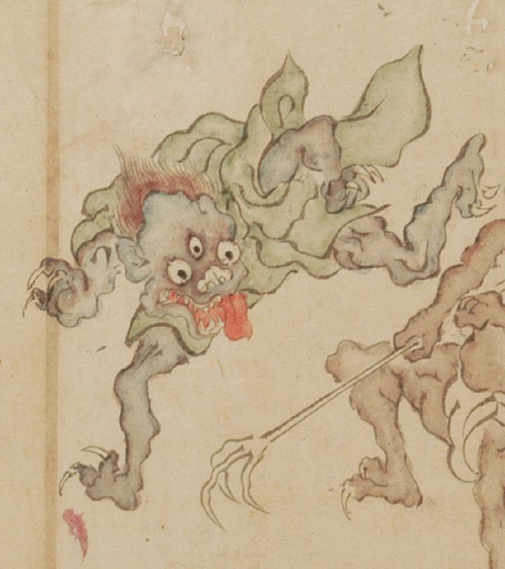

三つ目の化物。体は青く、青色の衣を身にまとっている。大きな舌を出し、鋭い牙を見せている。丸い鼻をしており、額がとても広い。
出典：親書誌：U426_nichibunken_0054：百鬼夜行絵巻；ヒャッキヤギョウエマキ／日付：2006／資源識別子：U426_nichibunken_0054_0001_0007
Copyright (c)2010- International Research Center for Japanese Studies, Kyoto, Japan. All rights reserved.